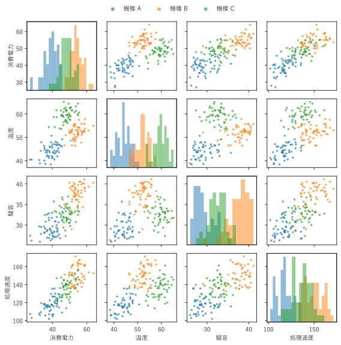
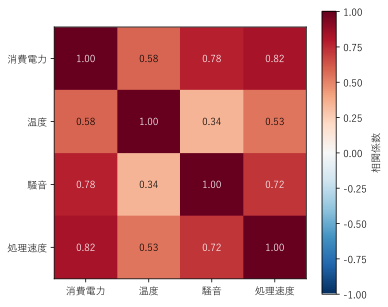
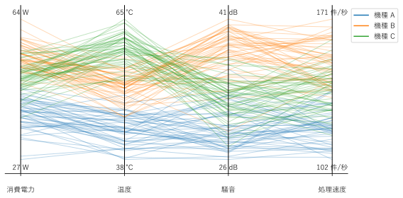
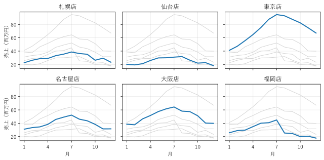
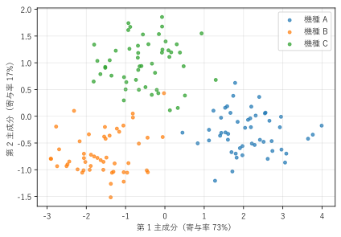

第 8 章 多次元データを見る
1 つの対象について 3 つ以上の項目を測ったデータを、多次元データという。例えば、サーバーごとの CPU 使用率、メモリ使用量、ディスク I/O、応答時間は、4 次元のデータである。平面のグラフで直接描けるのは 2 つの軸までなので、多次元データには工夫が必要である。この章では、散布図行列、ヒートマップ、平行座標プロット、スモールマルチプル、主成分分析による次元削減を扱う。
この章で使うデータ
この章の散布図行列、ヒートマップ、平行座標プロット、主成分分析では、共通の架空のデータを使う。3 機種のセンサー機器、各 50 台について、消費電力、温度、騒音、処理速度の 4 項目を測定した値である。データは補助モジュール multivariate_data.py の make_dataset() で作る。
22def make_dataset() -> tuple[np.ndarray, np.ndarray]:
23 """測定値（行が機器、列が項目）と、機種の番号の配列を返す."""
24 rng = np.random.default_rng(10)
25 rows = []
26 labels = []
27 for group, means in enumerate(_MEANS):
28 base = rng.normal(0, 1, (COUNT, 1)) # 項目どうしの相関を作る共通成分
29 noise = rng.normal(0, 1, (COUNT, len(FEATURES)))
30 weights = np.array([0.8, 0.6, 0.5, 0.7])
31 values = means + _STDS * (weights * base
32 + np.sqrt(1 - weights ** 2) * noise)
33 rows.append(values)
34 labels.append(np.full(COUNT, group))
35 return np.vstack(rows), np.concatenate(labels)
機種ごとに項目の平均が異なり、さらに 4 項目が互いに相関するように、共通の成分 base を加えている。
散布図行列
散布図行列は、すべての項目の組み合わせについて散布図を描き、行列の形に並べたものである。\(p\) 個の項目があれば、\(p \times p\) 個のマスができる。図 28 は、4 項目の散布図行列である。

図 28 4 項目の散布図行列。対角線のマスは各項目のヒストグラムである
行 \(i\)、列 \(j\) のマスは、横軸が項目 \(j\)、縦軸が項目 \(i\) の散布図である。対角線を挟んで対称な位置のマスは、同じ組の縦横を入れ替えた散布図になる。
対角線のマスには、その項目の分布をヒストグラムで描く。
点の色で機種を区別している。
この図から、例えば「温度」は機種 A、B、C をよく分ける項目であること、「消費電力」と「処理速度」は強い右上がりの関係を持つことが読み取れる。
散布図行列は、項目が 5 から 8 程度までなら有効である。それ以上になると 1 つのマスが小さくなりすぎるので、次のヒートマップで関係の強さを一覧してから、気になる組の散布図を個別に描くとよい。
16def create_figure() -> Figure:
17 """機種ごとに色分けした散布図行列を描く."""
18 data, labels = make_dataset()
19 size = len(FEATURES)
20 fig, axes = plt.subplots(size, size, figsize=(8, 8))
21 for row in range(size):
22 for col in range(size):
23 ax = axes[row, col]
24 # 対角線のヒストグラムは縦軸の単位が違うため、別の縦軸に描く
25 hist_ax = ax.twinx() if row == col else None
26 for group, name in enumerate(GROUPS):
27 values = data[labels == group]
28 if hist_ax is not None: # 対角線: ヒストグラム
29 hist_ax.hist(values[:, col], bins=12, alpha=0.5,
30 color=f"C{group}")
31 hist_ax.set_yticks([])
32 else: # それ以外: 横軸が col、縦軸が row の散布図
33 ax.scatter(values[:, col], values[:, row], s=6,
34 alpha=0.6, color=f"C{group}", label=name)
35 # 外周のマスにだけ目盛りと項目名を付ける
36 if row == size - 1:
37 ax.set_xlabel(FEATURES[col])
38 else:
39 ax.set_xticklabels([])
40 if col == 0:
41 ax.set_ylabel(FEATURES[row])
42 else:
43 ax.set_yticklabels([])
44 # 対角線のマスの軸の範囲を、同じ行と列の散布図にそろえる
45 for index in range(size):
46 other = (index + 1) % size
47 axes[index, index].set_xlim(axes[other, index].get_xlim())
48 axes[index, index].set_ylim(axes[index, other].get_ylim())
49 handles, names = axes[0, 1].get_legend_handles_labels()
50 fig.legend(handles, names, loc="upper center", ncols=len(GROUPS),
51 frameon=False, markerscale=2)
52 fig.tight_layout(rect=(0, 0, 1, 0.96))
53 return fig
対角線のヒストグラムは縦軸の単位（件数）が散布図と異なるため、twinx() で作った別の縦軸に描いている。
ヒートマップ
ヒートマップは、行列の各マスの値を色で表すグラフである。多次元データの分析では、項目どうしの相関係数を並べた相関行列をヒートマップで描くことが多い（図 29）。


図 29 4 項目の相関行列のヒートマップ
相関係数は -1 から 1 の値を取り、0 が「直線的な関係がない」ことを表す。そこで、0 を中心とする発散カラーマップを使い、vmin=-1、vmax=1 で色の範囲を固定する。範囲を固定しないと、データの最小値と最大値に合わせて色が割り当てられ、弱い相関が強く見えることがある。
色だけでは正確な値が分からないので、各マスに相関係数を書き添えている。消費電力と処理速度（0.82）や、消費電力と騒音（0.78）の相関が強いことが分かる。
なお、この相関係数は 3 機種をまとめて計算したものである。機種によって平均が異なるため、機種ごとに計算すると値は変わる。第 5 章で述べたように、相関係数だけで判断せず、散布図行列と併せて見るとよい。
17def create_figure() -> Figure:
18 """相関行列のヒートマップを描く."""
19 data, _ = make_dataset()
20 corr = np.corrcoef(data, rowvar=False) # 列どうしの相関係数
21 fig, ax = plt.subplots(figsize=(5.5, 4.5))
22 # 相関係数は -1 から 1 の値なので、0 を中心とする発散カラーマップを使う
23 image = ax.imshow(corr, cmap="RdBu_r", vmin=-1, vmax=1)
24 for row in range(len(FEATURES)):
25 for col in range(len(FEATURES)):
26 value = corr[row, col]
27 color = "white" if abs(value) > 0.6 else "black"
28 ax.text(col, row, f"{value:.2f}", ha="center", va="center",
29 color=color)
30 ax.set_xticks(range(len(FEATURES)), FEATURES)
31 ax.set_yticks(range(len(FEATURES)), FEATURES)
32 fig.colorbar(image, ax=ax, label="相関係数")
33 fig.tight_layout()
34 return fig
サンプルの全体：ch08_heatmap.py
平行座標プロット
平行座標プロットは、項目ごとに縦軸を立てて横に並べ、1 つの対象の値を、各軸の上の点を結んだ 1 本の折れ線で表すグラフである [Inselberg1985]。項目の数がいくつあっても描ける（図 30）。

図 30 3 機種の 4 項目の平行座標プロット。1 本の線が 1 台の機器を表す
項目ごとに単位も範囲も違うため、各項目の値を最小値が 0、最大値が 1 になるよう正規化してから描く。
平行座標プロットは、次のように読む。
同じ色の線が束になっていれば、その機種は似た値を持つ。機種 A（青）は全項目で下側にまとまっている。
隣り合う軸の間で線が平行に走っていれば、その 2 項目は正の相関を持つ。線が交差していれば、負の相関を持つ。
温度の軸では機種 B（橙）と機種 C（緑）が分かれるが、騒音の軸では順序が逆になっている。
平行座標プロットは、軸の並べ方で見え方が大きく変わる。隣り合う軸の関係しか読み取れないため、関係を見たい項目を隣に置く。また、対象が数百を超えると線が重なって読めなくなるので、半透明にするか、グループの平均だけを描く。
18def create_figure() -> Figure:
19 """機種ごとに色分けした平行座標プロットを描く."""
20 data, labels = make_dataset()
21 low = data.min(axis=0)
22 high = data.max(axis=0)
23 normalized = (data - low) / (high - low)
24
25 fig, ax = plt.subplots(figsize=(8, 4))
26 positions = range(len(FEATURES))
27 for values, group in zip(normalized, labels):
28 ax.plot(positions, values, color=f"C{group}", alpha=0.3,
29 linewidth=1)
30 for position in positions:
31 ax.axvline(position, color="black", linewidth=1)
32 # 各軸の上端と下端に、元の単位での最大値と最小値を書く
33 for position, (lo, hi, unit) in enumerate(zip(low, high, UNITS)):
34 ax.text(position, 1.03, f"{hi:.0f} {unit}", ha="center")
35 ax.text(position, -0.03, f"{lo:.0f} {unit}", ha="center", va="top")
36 ax.set_xticks(list(positions), FEATURES)
37 ax.tick_params(axis="x", pad=14)
38 ax.set_yticks([])
39 ax.set_ylim(-0.1, 1.1)
40 for side in ("top", "right", "left"):
41 ax.spines[side].set_visible(False)
42 handles = [Line2D([], [], color=f"C{group}", label=name)
43 for group, name in enumerate(GROUPS)]
44 ax.legend(handles=handles, loc="upper left", bbox_to_anchor=(1.0, 1.0))
45 fig.tight_layout()
46 return fig
サンプルの全体：ch08_parallel.py
スモールマルチプル
多くのグループの時系列や分布を 1 つのグラフに重ねると、線が絡み合って読めなくなる。そこで、同じ形式の小さなグラフをグループごとに描き、格子状に並べる。これをスモールマルチプルという [Tufte2001]。
図 31 は、架空の 6 店舗の月別売上を、店舗ごとのグラフに分けて並べたものである。

図 31 6 店舗の月別売上のスモールマルチプル。灰色の線は他の店舗である
各グラフでは、対象の店舗を青い太線で、他の店舗を灰色の細線で描いている。これにより、各店舗の推移と、全体の中での位置づけを同時に見られる。東京店だけが増加傾向にあることや、福岡店が 8 月以降に落ち込んでいることが、すぐに分かる。
スモールマルチプルでは、すべてのグラフの軸の範囲をそろえることが重要である（plt.subplots() の sharex=True、sharey=True）。範囲がグラフごとに違うと、見た目の高さを比べても意味がない。
30def create_figure() -> Figure:
31 """店舗ごとの折れ線グラフを 2 行 3 列に並べる."""
32 sales = make_sales()
33 fig, axes = plt.subplots(2, 3, figsize=(9, 4.5), sharex=True,
34 sharey=True)
35 for ax, store, values in zip(axes.flat, STORES, sales):
36 # 背景に全店舗の線を薄く描き、対象の店舗の線を強調する
37 for other in sales:
38 ax.plot(MONTHS, other, color="lightgray", linewidth=1)
39 ax.plot(MONTHS, values, color="C0", linewidth=2)
40 ax.set_title(store)
41 ax.set_xticks([1, 4, 7, 10])
42 ax.grid(alpha=0.3)
43 for ax in axes[1]:
44 ax.set_xlabel("月")
45 for ax in axes[:, 0]:
46 ax.set_ylabel("売上（百万円）")
47 fig.tight_layout()
48 return fig
サンプルの全体：ch08_small_multiples.py
主成分分析による次元削減
項目が多い場合、元の情報をなるべく失わないように、少数の新しい軸に要約してから描く方法がある。これを次元削減という。代表的な方法が主成分分析（PCA）である。
主成分分析は、データのばらつき（分散）が最も大きい方向を第 1 主成分、それと直交する方向の中で分散が最も大きい方向を第 2 主成分、として順に新しい軸を求める。手順は次のとおりである。
各項目を、平均 0、標準偏差 1 にそろえる（標準化）。単位の違う項目を同じ重みで扱うためである。
標準化したデータの共分散行列を計算する。
共分散行列の固有値 \(\lambda_1 \ge \lambda_2 \ge \cdots\) と、対応する固有ベクトルを求める。固有ベクトルが主成分の方向である。
データを固有ベクトルの方向に射影した値（主成分得点）を、散布図に描く。
各主成分がデータ全体の分散のうちどれだけを説明するかを、寄与率という。第 \(k\) 主成分の寄与率は次の式で求める。
図 32 は、4 項目のデータを第 1 主成分と第 2 主成分の散布図にしたものである。


図 32 4 項目のデータを主成分分析で 2 次元にした散布図
2 つの主成分で全体の分散の約 9 割（73% と 17%）を説明しており、3 機種がはっきり分かれて見える。散布図行列では 6 つの散布図を見比べる必要があったが、主成分分析では 1 つの図で機種の違いを確認できる。
一方、主成分の軸は元の項目を組み合わせたものなので、「第 1 主成分が大きい」ことの意味は直接には分からない。意味を知るには、固有ベクトルの成分（各項目の重み）を調べる必要がある。また、寄与率の合計が低い場合は、2 次元の図で失われた情報が多いことに注意する。
17def pca(data: np.ndarray, components: int) -> tuple[np.ndarray, np.ndarray]:
18 """主成分得点と、各主成分の寄与率を返す."""
19 # 項目ごとに平均 0、標準偏差 1 にそろえる（標準化）
20 standardized = (data - data.mean(axis=0)) / data.std(axis=0)
21 covariance = np.cov(standardized, rowvar=False)
22 # eigh は対称行列の固有値を小さい順に返すので、大きい順に並べ替える
23 eigenvalues, eigenvectors = np.linalg.eigh(covariance)
24 order = np.argsort(eigenvalues)[::-1][:components]
25 scores = standardized @ eigenvectors[:, order]
26 ratios = eigenvalues[order] / eigenvalues.sum()
27 return scores, ratios
np.linalg.eigh() は対称行列（共分散行列は対称）の固有値を小さい順に返すので、大きい順に並べ替えてから使う。実務では scikit-learn の PCA クラスを使うことが多いが、ここでは計算の中身が分かるように NumPy だけで実装している。
サンプルの全体：ch08_pca.py
まとめ
項目が少なければ、散布図行列ですべての組の関係を見る。
項目が多ければ、相関行列のヒートマップで関係の強さを一覧する。色の範囲は固定する。
平行座標プロットは項目の数によらず描けるが、隣り合う軸の関係しか読めない。
多くのグループは、軸をそろえたスモールマルチプルで並べる。
主成分分析で 2 次元に要約すると、グループの違いを 1 つの図で見られる。寄与率を必ず示す。